Published: 2023-01-26
Source link: https://www.cnphotos.net/academy/show-111.html
Want to take good photos?
It is far from simple.
In the age of the everyday photographer,
we have too many photos
that are worth almost nothing.
The standard of a good photo is...
Technique?
In fact, the methods of photography are basically the same for all.
Luck?
Not every wait brings the best moment.
Everyone shoots the same photos.
Can I still shoot more?
Some things look beautiful at first,
for example a sunset. But everyone shoots them,
everyone posts them, and every posted scene looks the same,
so you cannot help but grow tired of them.
Like this:
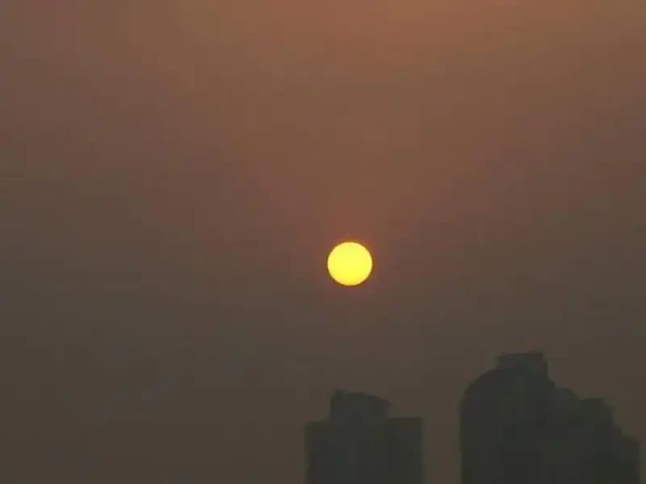
Or like this:
Or even like this:
After Hou Yi shot down the suns,
only one ordinary sun was left.
What is the point of always repeating the sun that others have already shot?
OK, even if you shoot it beautifully,
say what you like, is it not still just a sun?
What? You mean shooting the sunset is too common, so it is too ordinary?
Fine. I will show you a Mount Everest that ordinary people rarely see.
Now that is high-end, is it not?
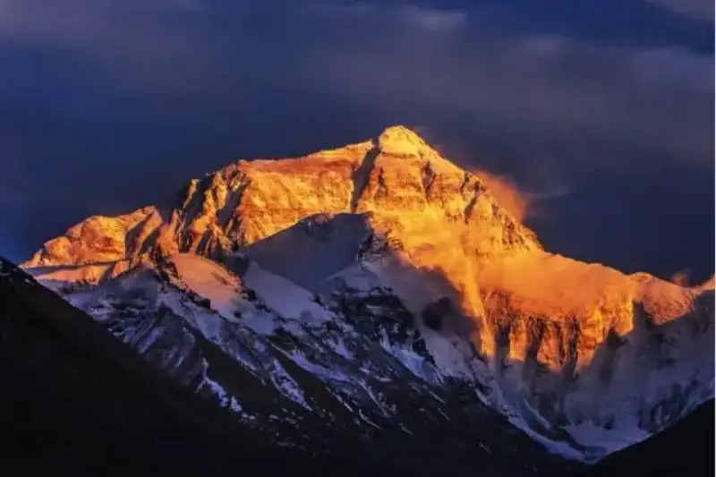
Or shall I use a telephoto lens to shoot the moon for you? That is impressive, is it not?
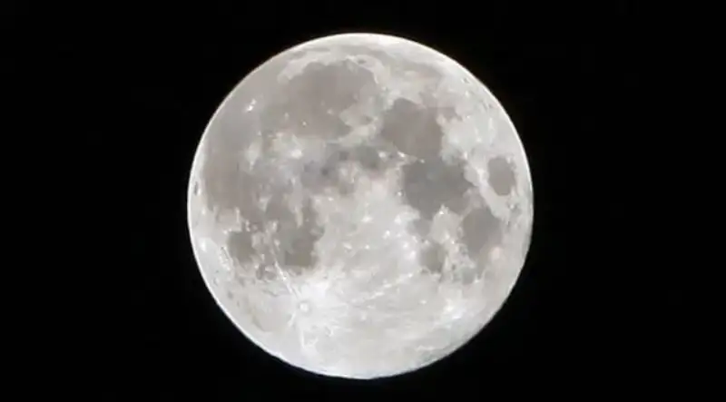
I admit these are all high-end,
but what I want to say is that, 100 years from now, a different person
can still shoot the same Mount Everest and the same moon,
unless within these 100 years Mount Everest collapses in an earthquake,
or the moon is shot down by anti-aircraft guns.
In my eyes, photos of Mount Everest and the moon
are worth less than a single street photograph.
Why? The reason is simple. No matter how well you shoot,
photos of Mount Everest and the moon are far too easy to copy.
In 100 years it will still be the same,
but a street photo may look different as soon as tomorrow.
The reason the vast world feels beautiful to us
is that it is full of variety. If everything looked the same,
it would not be beautiful. If you are a beginner,
it is natural that you shoot the same things.
You have not even learned the basics of exposure, so how can you talk about style.
But if an experienced old hand who has studied photography for years
is still keen to shoot exactly what everyone else shoots, then he has no future.
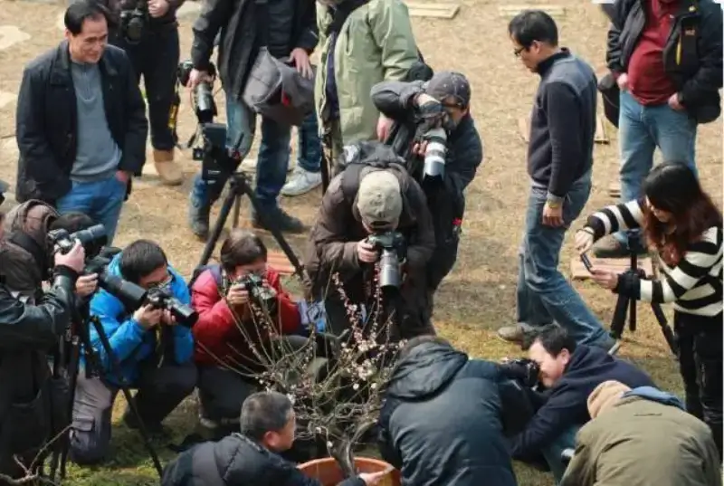
(See, this is the kind of old hand I mean.)
Some scenery is very easy to copy.
For example, if you shoot the Yuanyang terraces today,
tomorrow I can stand at the same spot you used
with the same view and shoot an identical photo,
and so can anyone else.
So what should you actually shoot?
The decisive moment
It is the decisive moment again, the same old talk.
You may be tired of hearing it, and sick at the sight of these words,
but have you actually done it?
In 1952, Henri Cartier-Bresson published a photo book.
Its title was Pictures in the Wild,
(Images a la Sauvette).
When the book was published in the United States,
the editors felt the French original title was not distinctive,
so they quoted a famous remark by the 17th-century French Archbishop Retz,
'In this world, everything has a decisive moment,'
and changed the title to The Decisive Moment.
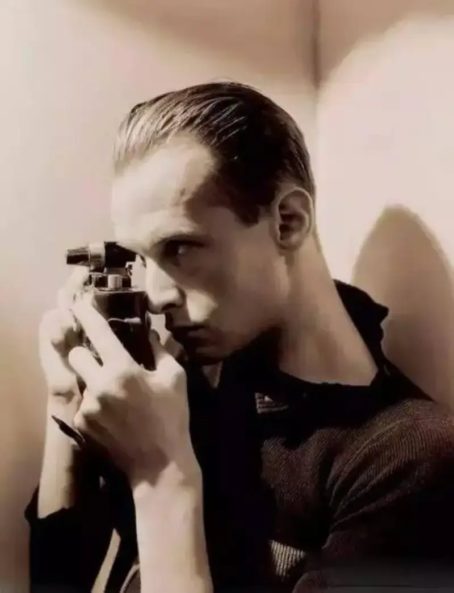
In 1932, Cartier-Bresson
bought his first Leica camera in Marseille.
After that he was never apart from this small camera.
Cartier-Bresson's earliest statement on the decisive moment:
'Of all the means of expression,
photography is the only one that fixes a moment.
What we grasp is something that is disappearing,
and once it is gone, it can never return.
To unify the content and the form of a subject,
you must define the related form strictly.
Photography must capture a balanced expression within motion.
For me, photography is the recognition, within reality, of lines,
of shapes, and of the play of light and shadow.'
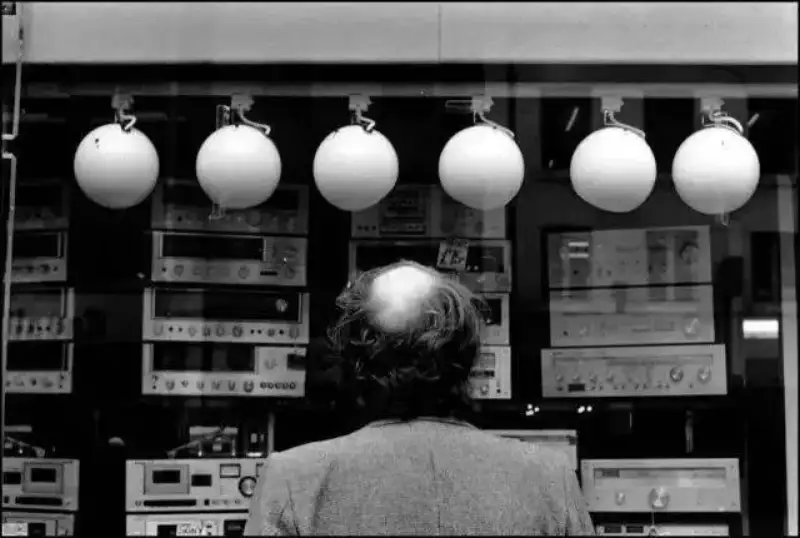
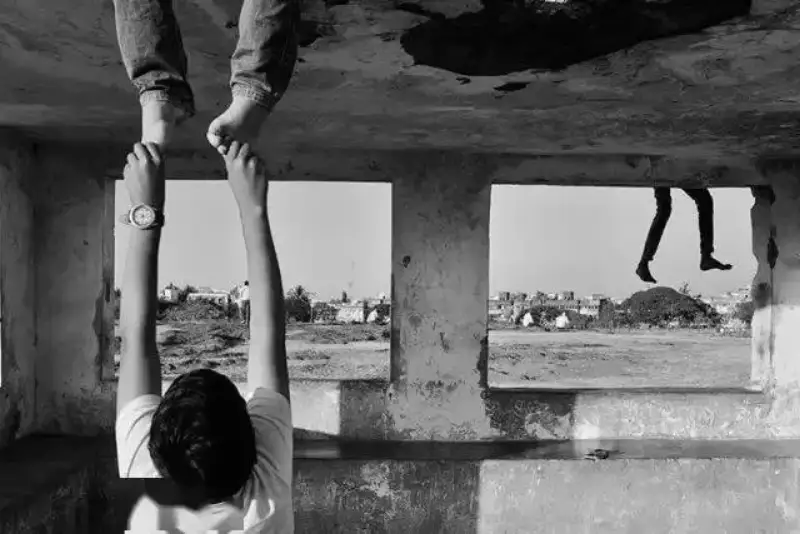
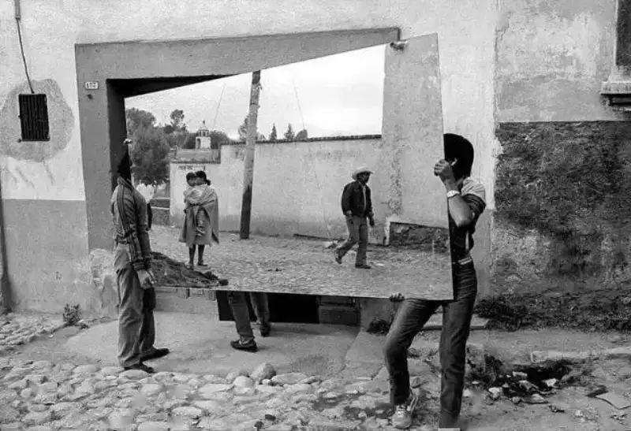
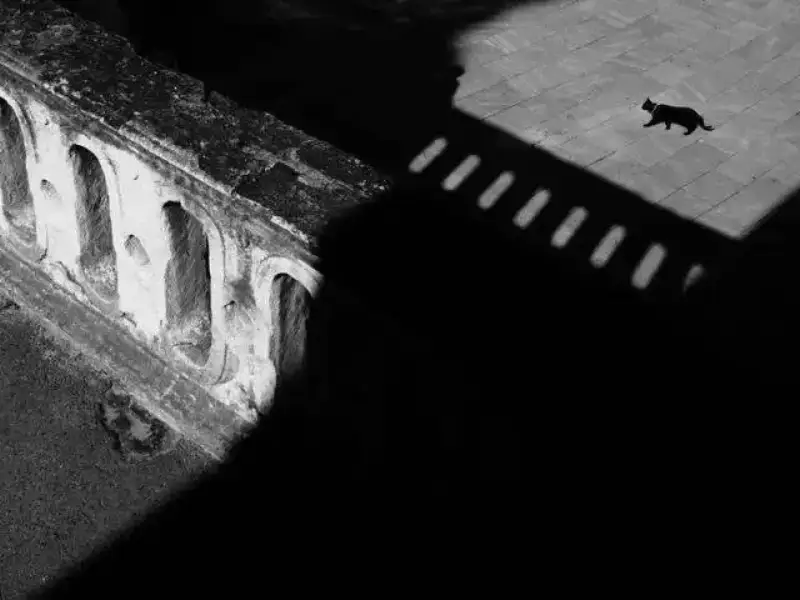
To say something a bit sentimental:
Some scenery, once you miss it, is gone,
and you may never meet it again in your whole life.
Photos with warmth
All along, the objectivity of photography has been understood as
cold and restrained,
but in fact, the choice of angle, the language of expression,
the choice of moment, and even the cropping in the viewfinder,
have always been warm. A good photo
should trigger a physical reaction in a person. It can make someone shiver,
or it can make a warm surge rise up.
' Warmth' is not only a pursuit of visual language,
it is also a natural longing of the emotions.
Photo by Nagatoyo Toyokazu
The meaning of photography is not all grand, high-end subjects.
It lies in standing on the people, events, and things around us,
and in making life richer and more vivid.
Photo by David Neff
What exactly is this 'warmth'?
First, the only way a photo works is by being seen,
so this warmth must arise in the act of viewing.
Second, the subject who views a photo is the reader,
so the subject who feels the warmth can only be the reader.
Third, viewing a work is an activity of the mind,
so the warmth of a work can only be a mental experience.
Given the literal meaning of the word 'warmth',
we can take it as a mental experience of feeling warmth.
From the above, the 'warmth' of a photographic work
is the mental experience of a reader feeling warmth after viewing it.
To put it more clearly, a so-called 'warm' work,
is a work that moves the reader.
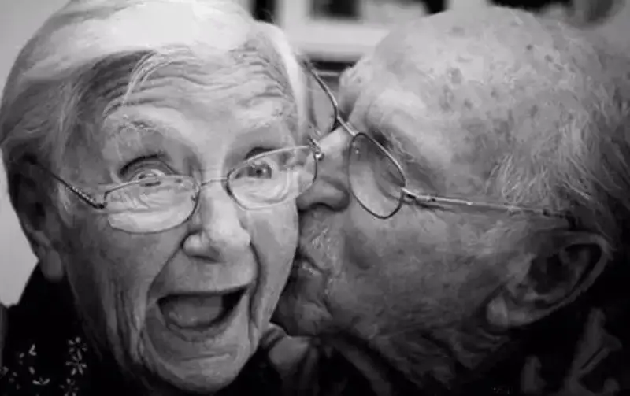
Photo by Wayne Jones
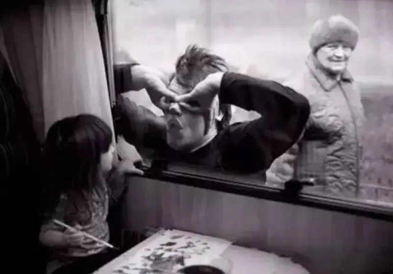
Photo by Victoria Vaisvilaite Skirutiene
The most important thing is the idea
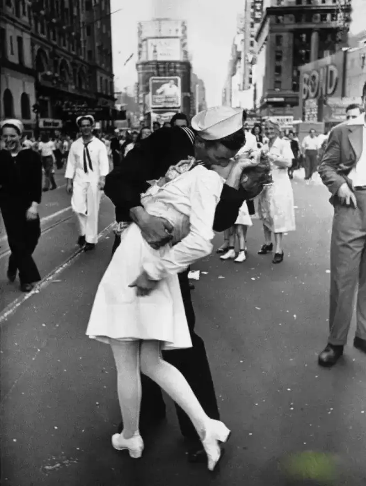
Many people must remember the photo called V-J Day in Times Square.
But few people know it is a fully staged photo.
It was shot on the day Germany surrendered,
and the photographer paid a young man to kiss a nurse for the shot.
Why does no one look deeper into the people in this photo?
Because such a photo lifts people's spirits,
and it does much to calm the public mood.
What does this tell us?
What you shoot does not matter,
how it turns out is what matters.
Now let us look at another set of surreal works.
They are highly controversial, and also very popular.
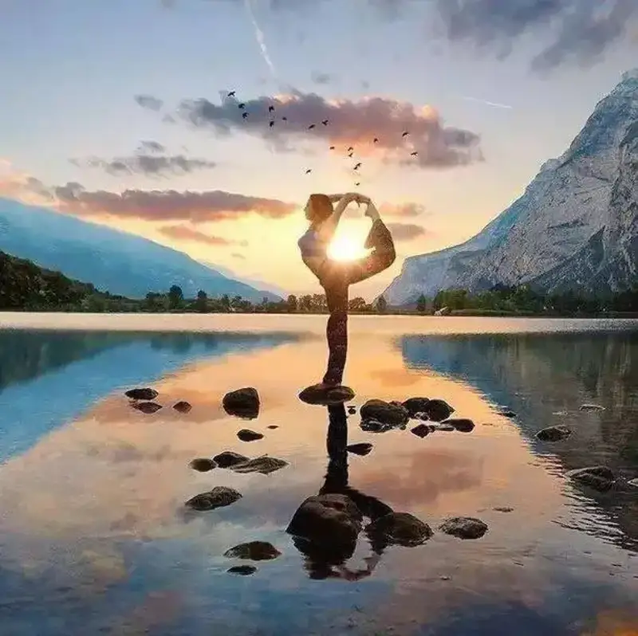
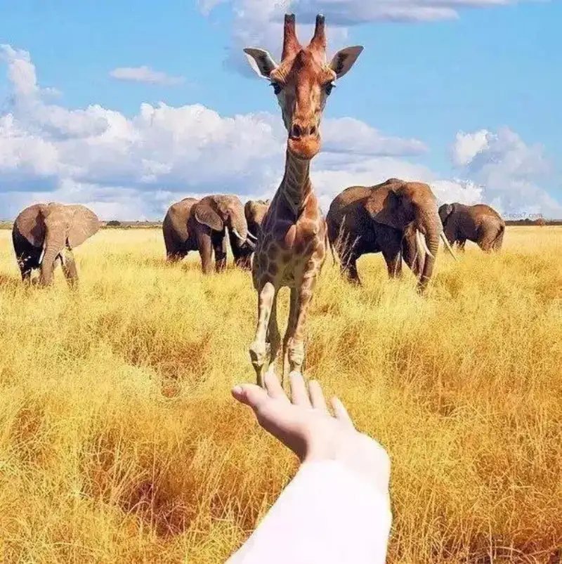
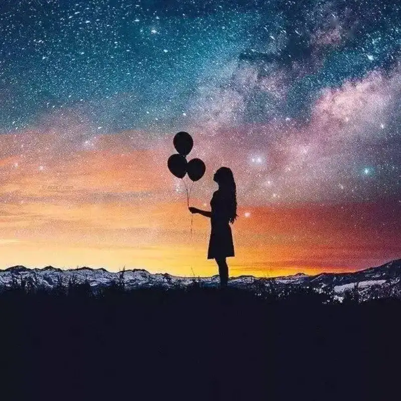
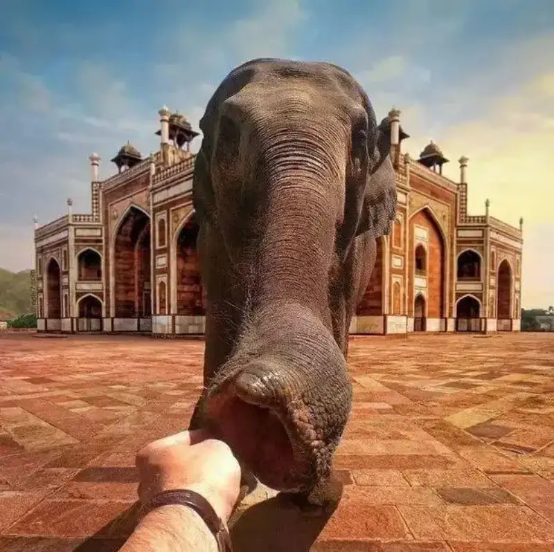
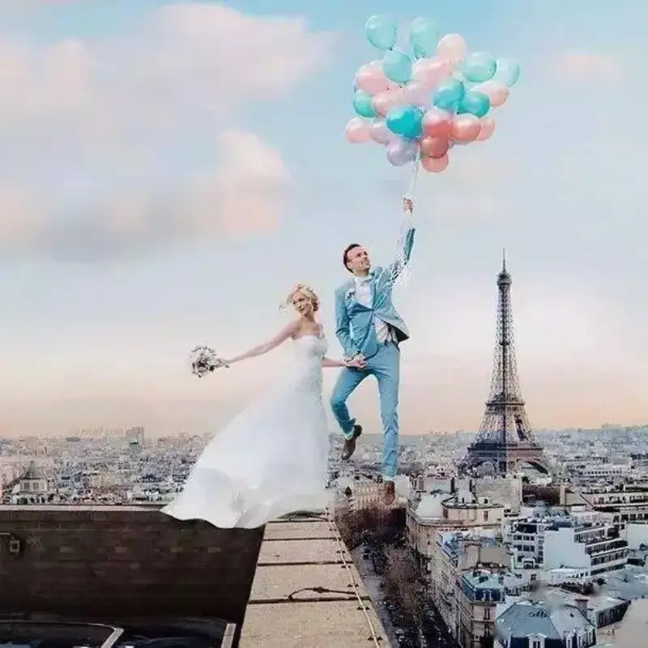
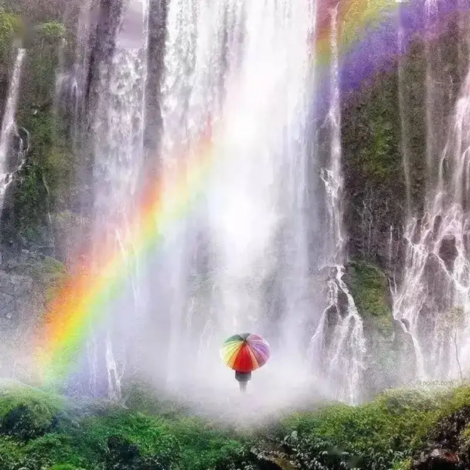
Robert Jahns shot this set.
After seeing them, you may say:
'The photos are cool. They are photoshopped, right?' They indeed are.
But all the post-processing was done on an iPhone.
These images, which could almost all be used as wallpapers,
each take from several hours to several days.
Yet the success they bring is huge:
on average, each photo gets 37,000 likes and 800 comments.
What does this show?
Everyone can use the tools,
the key lies in the imagination.